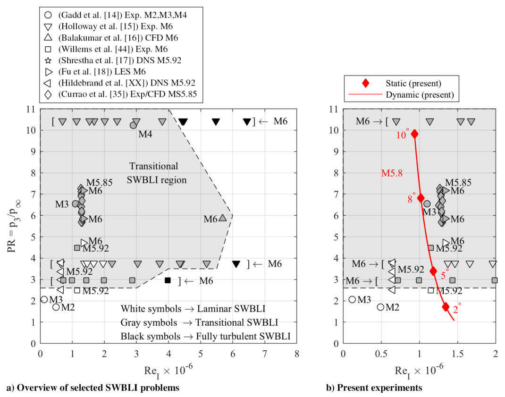
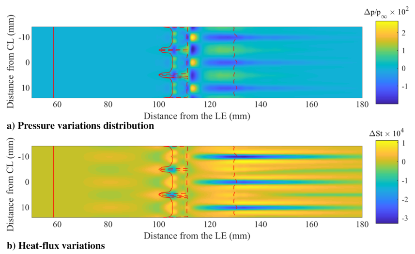
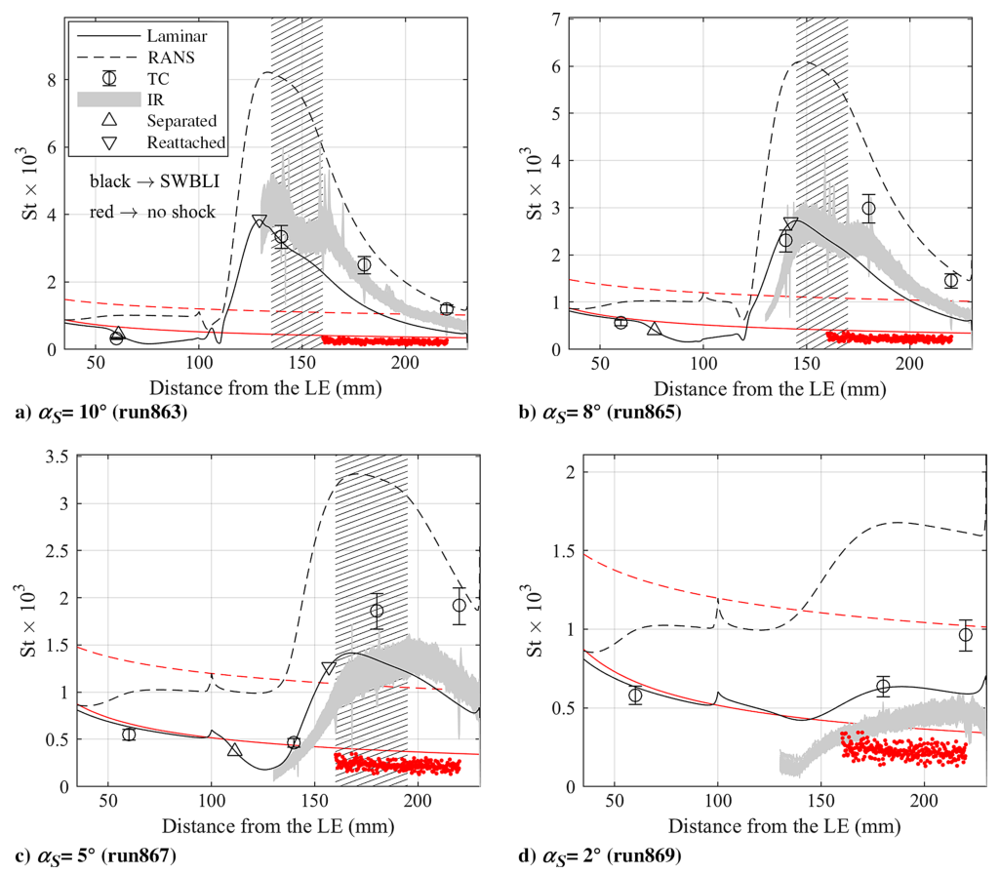
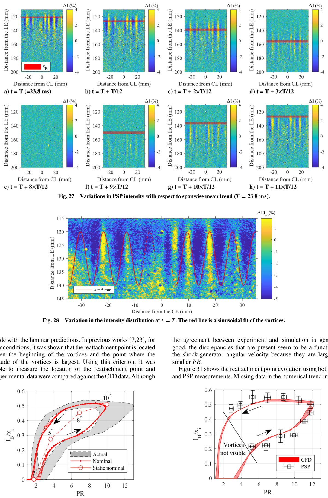

01中文摘要
研究M∞=5.8、Re∞≈7×10^6 m^-1平板上振荡激波/边界层干扰。激波发生器自由俯仰，以42 Hz振荡，激波强度和撞击点随之变化，最大气流偏转角约10°。静态与动态实验中转捩均发生在分离区下游；热流值通常介于层流与湍流解之间，说明尾缘膨胀波形成的有利压力梯度延迟了完全转捩。大偏转角下层流模拟高估峰值压力。从再附点起，热流测量逐渐由层流解偏向完全湍流；再附区观察到涡，其分布仅取决于分离点边界层特性。激波运动使分离泡长度最大变化30%；静态分离区放大约200 Hz扰动，动态实验则在平板上处处测到伪正弦运动的谐波。
02阅读说明
类型：实验+数值混合研究（风洞实验为主，二维层流/URANS 与三维层流 CFD 辅证）；AIAA Journal 59(3), 2021, pp.940–959，共20页，全文完整。材料：bundle 覆盖全部章节（I–VII、致谢、参考文献）；文本层有页眉水印干扰且公式上下标丢失，式(1)–(5) 与表2 已回读原 PDF 第6、7、12、13、14、17页核对。图件：16 张抓取图及图注可读，图号/页码取自抓取清单。信息完整度较高：来流、几何、测量不确定度、网格与时间步均有交代；但转捩位置无直接测量，峰值压力高估范围在正文与结论间表述不一致，约200 Hz 峰对应的 Sr 数值在文本层不自洽，均已列为待核对项。提取口径：仅用 bundle 文本/图注及上述6页 PDF 核对，不引入外部知识。 文章类型：期刊
03一句话核心与三句话摘要
M∞5.8 平板振荡激波干扰：转捩在再附区被尾缘膨胀波抑制，再附涡 λ≈5 mm 不随激波强度变，动态泡长变化约30%。
- 已有 SWBLI 研究多针对湍流来流与自激非定常，对飞行器机动/控制面运动（约10–100 Hz）引起的激波强度与撞击点变化、以及高马赫数下层流来流的激波致转捩/再层流化认识不足。 AI概括
- 在 M∞=5.8、Re∞=7.0×10^6 m^-1 下用 42 Hz 自由俯仰激波发生器、PSP/压力传感器/热电偶/红外与二维层流、RANS、三维层流计算，发现热流在再附点后偏离层流解、双峰区指示转捩被抑制。 AI概括
- 再附涡波长约5 mm，只取决于相互作用起点的边界层性质；动态工况分离泡长度最大变化约30%，全板出现激波运动的 f–4f 谐波。 原文明确
04核心内容清单
| 要点 | 类型 | 重要性 | 原文依据 | 属性 |
|---|---|---|---|---|
| 在 M∞=5.8、Re∞=7.0×10^6 m^-1 下实现自由俯仰激波发生器的 42 Hz 伪正弦振荡，αS 在0–10° 间变化，峰值可达11.5°。 | 实验设计/工况 | A | p.940 摘要；p.944；p.958 结论 | 原文明确 |
| 静态工况 αS=10/8/5/2° 的分离区长度为68.3/66.15/45.6/0 mm；αS=2° 不分离，其余均分离。 | 实验/CFD 结果 | A | 表2，p.951；p.947 | 原文明确 |
| 层流 CFD 在大偏转角下高估峰值压力，αS=2° 例外；但正文称峰压“一致地被高估”，与结论“仅两个最大偏转角”存在表述差异。 | 结果/一致性 | A | p.948；p.958；图16，p.948 | AI概括 |
| 热流在再附点上游与层流解一致，下游向 RANS 湍流解偏移；双峰区被解释为转捩受抑制/再层流化的标志。 | 实验结果/机制 | A | p.949–950；图19，p.950；图17，p.949 | 原文明确 |
| αS=10/8° 时尾缘膨胀波处压降可超过75τE，满足 Δp/τE>75 的再层流化判据。 | 判据/结果 | A | p.948–949；图18，p.949 | 原文明确 |
| 再附涡波长 λ≈5 mm，与 αS、PR、曲率无关；β=1–1.5，λ/δR=2–4，涡直径 λ/2 约等于相互作用起点边界层厚度。 | 结果/标度 | A | p.951–952；表2；图22，p.951 | 原文明确 |
| 三维层流解在 λ=10 mm 处放大因子 N=11>Ncr=10，指向再附区发生转捩；λ=5 mm 时 N 在再附下游约50 mm 处略低于10。 | 数值判据 | A | p.946；图13，p.946 | 原文明确 |
| 动态工况分离泡长度随角速度变化：α 增大时最大缩小30%，减小时增大10%；再附点实验滞后于 CFD。 | 动态结果 | A | p.958；图29–31，p.955–956 | 原文明确 |
| 静态分离泡在 Sr≈0.3（约200 Hz）将扰动放大约10倍，且频率对 αS=10 与5° 近似相同、幅值随泡长增大。 | 频谱结果 | B | p.956；图33，p.956 | 原文明确 |
| 动态工况在全部测点出现 f=42 Hz 及 2f–4f 谐波，层流动网格解与实验吻合，说明谐波不是三维效应或转捩所致。 | 频谱/机制 | B | p.957–958；图35，p.957 | 原文明确 |
| 二维与三维结果压力几乎一致，热流在120–160 mm 偏差<5%；中线±30 mm 内压力不受核流边界影响。 | 方法验证 | B | p.945–947；图10–11，p.946 | 原文明确 |
| 测量分辨率：PSP ±1 kPa、压力传感器±100 Pa、热电偶热流±12%、红外空间<0.3 mm。 | 测量 | C | p.944–945；p.949 | 原文明确 |
05引言：研究问题与领域缺口
第I节（p.941–942）：高超声速飞行器机动、控制面偏转或气动弹性会使激波强度与撞击点变化，频率量级 O(10–100 Hz)，低于 SWBLI 自激非定常；已有工作多集中于湍流 SWBLI（上游/下游机制，St≈0.01–0.03），对“激波发生器运动诱发”的非定常关注不足：Daub 等[12]在 M3–4 用 10 ms 内转20° 的激波，Miller 等[13]计算10 Hz 振荡激波对面板的热结构响应，但缺少更高马赫数实验，也缺少层流来流下激波致转捩/再层流化的直接证据；作者指出 DNS 难以对转捩给出定论且代价高，高 Re 下低频非定常预测亦困难（p.941）。目标三条（p.942）：(1) 静态与动态表征不同偏转角与 Re 下的转捩型 SWBLI；(2) 测量再层流化对峰值压力与热流的影响；(3) 确定瞬态效应对分离泡长度与 Görtler 型涡分布的影响。文中还提出再附涡成因争议（离心/Görtler 不稳定性 vs 全局模态 vs 斜压效应，p.942），本文试图补充判别证据。边界：来流为层流；动态首周期 αS 超过标称10°，使干扰在图1 中跨越层流区与转捩区（p.942）。
06流动条件与几何构型
| 项目 | 数值/描述 | 依据 | 备注 |
|---|---|---|---|
| 风洞/来流 | USQ 自由活塞压缩加热 Ludwieg 管 TUSQ，配 Mach 6 喷管；来流层流 | p.942，II.A | 喷管出口直径220 mm；数值未模拟喷管 |
| 马赫数 M∞ | 5.8（变化±0.06） | 表1，p.943 | |
| 单位雷诺数 Re∞ | 7.0×10^6 m^-1（变化±0.1×10^6 m^-1） | 表1，p.943 | 以每米为参考长度 |
| 总压 p0 | 968 kPa（变化±40 kPa） | 表1，p.943 | |
| 静压 p∞ | 755 Pa（变化±80 Pa） | 表1，p.943 | |
| 总温 T0 | 580 K（变化±30 K） | 表1，p.943 | 60 ms 至试验末总温降约160 K |
| 静温 T∞ | 75 K（变化±15 K） | 表1，p.943 | |
| 壁温 Tw | 300 K（±2 K，试验前室温） | 表1，p.943 | αS=10° 非金属平板再附区最大升温约40 K |
| 来流时变 | 与均值的偏差多在10%内；总压谱在150、245 Hz 有峰；FLDI 另见3 kHz 峰 | p.943，图2–3 | 3 kHz 峰来自储气罐边界层转捩，与平板无关 |
| 激波发生器几何 | 楔半角 θw=5°，长 Lw=110 mm，宽 Ww=240 mm；前缘半径<100 μm；质量约170 g，I=0.105 g·m² | p.943–944 | CFRP 蒙皮+铝前缘；宽度超出喷管出口（220 mm），非全浸没 |
| 平板几何 | 长250 mm、宽300 mm；PSP 涂覆140×200 mm，前110 mm 未涂 | p.947；p.944 | 铝板作热沉用于测压；另用相同尺寸亚克力板测热流 |
| 静态工况 αS=10° | x0=51、δ0=2.60、δ0*=1.21、xS=61、δS=2.70、δS*=1.38、rS=168.5、xR=129、δR=1.18、δR*=0.73、rR=164.2、lB=68.3（mm） | 表2，p.951 | 图21a 标 run863；图17 另标 run799 |
| 静态工况 αS=8° | x0=63、δ0=2.80、δ0*=1.32、xS=76、δS=2.92、δS*=1.51、rS=212.4、xR=142、δR=1.43、δR*=0.85、rR=247.6、lB=66.15（mm） | 表2，p.951 | 图21b 标 run865 |
| 静态工况 αS=5° | x0=91、δ0=3.00、δ0*=1.50、xS=111、δS=3.11、δS*=1.67、rS=218.3、xR=157、δR=2.02、δR*=1.19、rR=378、lB=45.6（mm） | 表2，p.951 | 图21c 标 run867 |
| 静态工况 αS=2° | x0=103、δ0=3.00、δ0*=1.53；无分离（xS/xR 等为“—”，lB=0） | 表2，p.951；p.947 | M∞sinσ=1.13<1.14，无再附涡；图21d 标 run869 |
| 动态工况（振荡） | α 在+5° 与−5° 间自由俯仰，αS=α+θw 在10°–0° 间变化；f=42 Hz；T=23.8 ms；首周期最大 αS=11.5° | p.944；p.940；p.953；图26 图注 p.954；p.958 | 设计频率30–40 Hz，受惯性限制实际最高42 Hz；振幅随时间因摩擦衰减 |
| 边界层状态 | 来流层流；静态/动态干扰均为“转捩型”；αS≥5° 分离 | p.947–950；p.958 | 转捩位置未直接测量 |
07核心现象与关键参数
| 参数 | 定义 | 数值 | 关系/说明 | 依据 |
|---|---|---|---|---|
| 激波强度 PR | PR=p3/p∞，即无粘激波下游压力与来流静压之比（压力跳跃） | 文中未逐工况给出数值（图1、图7 以坐标形式给出） | αS 与 xI 的关系见图7；PR 随 αS 增大 | p.940 符号表；p.944 图7；图1，p.942 |
| 相互作用点雷诺数 ReI | 以撞击点位置为参考长度的局部雷诺数 | 文中未逐工况给出数值 | 图1 中与 PR 共同划分层流/转捩/湍流区 | p.942；图1 |
| 分离区长度 lB | 分离点到再附点的流向距离 | αS=10/8/5/2°：68.3/66.15/45.6/0 mm | 随 αS 减小而缩短；动态时随 dα/dt 变化约−30%/+10% | 表2，p.951；p.958 |
| 边界层厚度与位移厚度 | δ（边界层厚度）、δ*（位移厚度），取相互作用起点附近 | αS=10°：δ0=2.60、δ0*=1.21；8°：2.80/1.32；5°：3.00/1.50；2°：3.00/1.53（mm） | 表2 同时给出分离点/再附点值 | 表2，p.951 |
| 曲率半径 r | 按式(2)由二维平均流线计算的分离点/再附点曲率半径 | αS=10°：rS=168.5、rR=164.2；8°：212.4/247.6；5°：218.3/378（mm） | 用于 Görtler 数中的 Λ=Re_λ(λ/r_s)^(1/2) | 式(2)，p.951；表2 |
| 涡波长 λ | 再附区展向涡的波长/间距 | 约5 mm（三维层流解在再附线附近为10 mm，下游降为约5 mm） | 与 αS、PR、r 无关；λ/δR=2–4 | p.946；p.950–952；图22，p.951 |
| 无量纲波数 β | β=(2π/λ)δ*，基于位移厚度 | 再附处各静态工况均为1–1.5 | 见式(3) | 式(3)，p.952 |
| Görtler 数 G | G=(2π)^(-3/2)Λβ2^(3/2)，其中 β2=2πθ/λ，Λ=Re_λ(λ/r_s)^(1/2) | 文中未给数值（仅图24 数据点） | 与稳定性图比较判别离心不稳定性 | 式(4)，p.953；图24，p.952 |
| 放大因子 N | N=ln[(Δq/Δq_S)(ρ∞U∞/(ρ3U3))]，热流扰动相对分离点并按通量比归一 | λ=10 mm、中线：峰值 N=11；λ=5 mm、z=5 mm：再附下游约50 mm 处略低于10 | Ncr=10 为转捩判据 | 式(1)，p.945；p.946；图13 |
| Strouhal 数 Sr | Sr=fδ0/U∞≈f×0.0015 | 42 Hz→Sr≈0.063；200 Hz→Sr≈0.3 | 用于把实验频率无量纲化 | 式(5)，p.956 |
| 振荡频率 f 与周期 T | 激波发生器俯仰频率与周期 | f=42 Hz，T=23.8 ms | k=fL/U∞=0.005<0.05，气动阻尼可忽略 | p.940；p.953；图26 图注 p.954 |
| 流体时间尺度 τF | τF=xI/U∞ | 约0.2 ms | τF≪T，运动瞬态不足以解释压力偏差 | p.954 |
| 再层流化判据 | 膨胀波处压降与上游剪应力之比 Δp/τE | αS=10/8° 时 Δp/τE 可大于75 | 文献[37,38]判据：Δp/τE>75 发生再层流化 | p.948–949；图18 |
| 涡出现阈值 | M∞sinσ（σ 为激波角） | αS=2°：1.13；文献阈值1.14 | 低于1.14 时不出现涡 | p.950 |
| 峰值压力/热流 | PSP/PT 峰值压力与 IR/TC 峰值热流 | 层流解高估峰压（大偏转角）；热流下游低于完全湍流解、高于层流解（定性） | 峰压与峰热流应随转捩增强而升高（Simeonides） | p.948–950；图16、19 |
08方法与数据
第II–IV节（p.942–947）。实验：USQ 自由活塞压缩加热 Ludwieg 管 TUSQ + Mach 6 喷管；标称 M∞=5.8、Re∞=7.0×10^6 m^-1、p0=968 kPa、p∞=755 Pa、T0=580 K、T∞=75 K、Tw=300 K（表1，p.943），来流偏差多在10%内，试验后段总温降约160 K、导出 T∞ 降约20 K（p.943，图2）。激波发生器为楔（半角 θw=5°、长110 mm、宽240 mm），自由俯仰，设计频率30–40 Hz、实测伪正弦42 Hz；质量约170 g、绕枢轴转动惯量0.105 g·m²，用活塞理论估算载荷（p.943–944）。平板250×300 mm；PSP 涂覆140×200 mm，前110 mm 因遮挡未涂（p.947）。测量：8 只 Kulite XTL-190（0–70 kPa、±100 Pa、采样10–50 kHz）、快速响应 PSP（响应100 μs、±1 kPa、2 kHz）、5 只 K 型热电偶（热流不确定度约12%）与红外热像（空间不确定度<0.3 mm，仅在 αS=10° 与TC一致度>80% 时作定量），热流按 Oldfield 方法反演（p.944–945、p.949）。数值：ANSYS/Fluent 19.1，二维定常与瞬态动网格，隐式单元中心二阶迎风；瞬态全层流解，并以 k-ω SST 给出湍流极限；Δy 6–100 μm、SWBLI 区 Δx_min=5 μm、区外≤60 μm，Δt=10^-5 s、每步40次子迭代；网格无关性仅对 αS=10° 进行（p.945）。三维定常层流仅 αS=10°：展向拉伸30 mm、4600万单元、展向0.5 mm、约100万次迭代（p.945）。用轴对称 RANS 喷管解确认中线±30 mm、至少至 x=200 mm 不受核流边界影响（p.945–947）。式(1)用热流与密度-速度比定义扰动放大因子 N（p.945）。
| 项目 | 内容 | 依据 | 备注 |
|---|---|---|---|
| 实验设施 | TUSQ 自由活塞压缩加热 Ludwieg 管 + Mach 6 轴对称喷管；试验段安装激波发生器与平板 | p.942，II.A | 来流用储气罐压力+等熵关系导出，M∞ 由皮托耙测量 |
| 模型 | 自由俯仰楔形激波发生器（5°半角，110×240 mm）+ 刚性平板（250×300 mm）；另备亚克力平板测热流 | p.943–944；p.947 | |
| 激波发生器设计 | 活塞理论估算上下表面气动载荷；CFRP 蒙皮减重；实测俯仰角由纹影图像提取 | p.943；p.953；图25 | |
| 压力测量（点） | Kulite XTL-190，量程0–70 kPa，感受面内凹3 mm，1 mm 测压孔，增益100、带宽10 kHz；不确定度约±100 Pa | p.944 | 8 只沿中线自 x=60 mm 起、间距20 mm |
| 压力测量（场） | 多孔快速响应 PSP，响应约100 μs，不确定度约±1 kPa；400 nm UV 照明，高速相机2 kHz | p.944 | PSP 与压力传感器在测压孔附近比对定不确定度 |
| 热流测量（点） | K 型热电偶（Omega CO2 系列）嵌入平板凹槽，放大器带宽约35 kHz，采样10 kHz；热流不确定度约12% | p.944 | 5 只，距中线50 mm、间距40 mm；材料参数 ρ=1190±10 kg/m³、c=1470±15 J/(kg·K)、k=0.21±0.02 W/(m·K) |
| 热流测量（场） | 红外热像，2 kHz；用邻近热电偶原位标定；空间不确定度<0.3 mm；与TC一致度>80% 时才作定量 | p.944–945；p.949 | 仅 αS=10° 满足定量条件；其余只用于空间特征（涡分布） |
| 热流反演 | 由表面温度史按 Oldfield 脉冲响应方法求热流；Stanton 数按文献[7,23]定义，取 Pr=0.71 与恢复因子 r | p.945；p.949 | 恢复因子的 Pr 指数在文本层缺失，受限于材料无法确认 |
| 数值求解器 | ANSYS/Fluent 19.1；隐式、单元中心、二阶迎风；二维定常（静态）与二维瞬态动网格（动态） | p.944–945 | |
| 湍流处理 | 瞬态全层流解为主；另用 k-ω SST RANS 计算完全湍流极限作为对比 | p.945 | 作者明确 SWBLI 为转捩型，层流解不代表真实转捩过程 |
| 网格 | O 型网格，首层 Δy 6 μm、外缘100 μm；SWBLI 区 Δx_min=5 μm，区外≤60 μm；分块结构化、无悬挂节点 | p.945；图8 | 网格无关性仅对 αS=10° 进行 |
| 时间推进 | 二阶隐式，Δt=10^-5 s，每步40次子迭代 | p.945 | |
| 三维计算 | 仅 αS=10° 定常层流：二维网格展向拉伸30 mm，4600万单元，展向0.5 mm，约100万次迭代 | p.945 | 展向网格无关性未做，0.5 mm 已比文献细至少2倍 |
| 动边界 | 按纹影实测的 α(t) 施加于楔面；另做等幅正弦+标称来流的 baseline | p.953 | 实测运动引入数值不确定性 |
| 验证 | 喷管轴对称 RANS 核流边界；二维/三维对比；PSP 与 PT 对比；网格/时间步无关性（仅 αS=10°） | p.945–947 | 二维热流在120–160 mm 与三维偏差<5% |
09核心推导与公式
原文为实验+CFD 研究，没有从 Navier–Stokes 方程出发的解析推导；其“推导链”是由定义式(1)–(5)与文献判据构成的定量论证链（AI概括）：先由三维层流解与热流测量给出再附区展向扰动的放大因子 N，用 N>Ncr=10 判断转捩位置；再由二维平均流线算分离/再附点曲率半径 r，结合实测 λ、δ*、θ 构造 β、β2、G、Λ，把实验点投入 Görtler 线性稳定性图判别涡的成因；同时用膨胀波处 Δp/τE>75 判据判断再层流化；最后用 Sr=fδ0/U∞ 把 42 Hz 与约200 Hz 峰无量纲化。下列步骤按原文公式顺序整理，未补充教科书推导。
关键假设
- 二维层流解可作为再附点上游的基准；k-ω SST RANS 解代表完全湍流极限，二者之间为转捩过程。
- 再附涡的波长可由三维层流解与红外/PSP 强度图测得；涡的展向分布可用正弦拟合（图22、图28）。
- 曲率半径 r(x) 由二维时均流线按式(2)计算，可代表分离点/再附点附近的流线弯曲。
- Görtler 参数中的 θ、δ* 取相互作用起点处的边界层值；Re_λ 以涡波长 λ 为参考长度（原文未给显式定义）。
- Δp/τE>75 的再层流化判据（文献[37,38]）可外推到本文高超声速转捩型 SWBLI。
- PSP 强度比 Iref/I 与压力呈非线性关系，强度图只用于空间特征识别，压力值以标定后的 PSP/PT 为准。
推导过程
以分离点热流扰动 Δq_S 为参考，按密度×速度通量比归一局部热流扰动 Δq，取自然对数定义 N；N 超过临界值 Ncr=10 视为具备转捩条件。原文在 λ=10 mm 的中线位置评估得 N=11（再附区峰值），λ=5 mm 时在再附下游约50 mm 处略低于10。
由二维平均流线的斜率与二阶导数计算局部曲率半径 r(x)，用于给出分离点与再附点的曲率尺度（表2 的 rS、rR）。曲率是 Görtler/离心不稳定性的几何来源。
用位移厚度 δ* 与实测涡波长 λ 定义无量纲波数 β；本文各静态工况在再附处 β=1–1.5，说明涡尺度与当地边界层厚度同量级。
由动量厚度 θ、涡波长 λ 与分离点曲率半径 r_s 组合出 β2、Λ 与 Görtler 数 G，用于与 El-Hady–Verma 的凹壁线性稳定性图比较；本文实验点落在稳定区附近/之外，指向离心不稳定性。
将本文三点与文献[23,24,48–50]的数值/实验点同绘于 G–β2 图：稳定区（红色）为 Mach 5 凹壁可线性预测的涡；区外涡非线性发展并导致转捩。原文据此并对照 Cao 等（Λ≈5000）与 Currao 等（Λ=10,000）的结果，推断 Mach 5–8、5000<Λ<10,000 时转捩发生在再附点上游。
用膨胀波撞击处压降 Δp 与紧邻上游剪应力 τE 之比判断再层流化：Δp/τE>75 时发生反向转捩。本文 αS=10° 与8° 的压降可超过75τE，作者据此解释双峰区与热流低于湍流解。
以 δ0 与 U∞ 把频率写成 Strouhal 数，得到 Sr≈f×0.0015；42 Hz 对应 Sr≈0.063，约200 Hz 对应 Sr≈0.3，用于比较静态泡内放大与动态谐波。
适用边界：式(1)–(5) 均为定义式或文献判据的组合，原文没有从控制方程出发的解析推导；N 仅在 λ=10 mm 的中线位置评估；Görtler 参数采用二维时均流线曲率，未做三维稳定性分析；稳定性图来自文献[24,48–50]的计算域，本文只叠加数据点；Δp/τE>75 判据源自超声速实验/理论，外推到高超声速转捩型 SWBLI 未经本文独立验证；τE 的取值方法文中未详述；式(4) 中 Re_λ 的定义与式(5) 的系数0.0015 均由 δ0=1.5 mm 量级导出，随工况略变；恢复因子的 Pr 指数在文本层缺失，受限于材料无法确认。
10结果：主要发现与关键证据
第V–VI节（p.947–958）。静态（αS=2/5/8/10°）：除2°外均分离（p.947）；表2（p.951）给出 lB=68.3/66.15/45.6/0 mm，xS=61/76/111/– mm，xR=129/142/157/– mm，rS=168.5/212.4/218.3 mm，rR=164.2/247.6/378 mm。压力：层流解在相互作用上游与测量一致，峰值压力被层流解高估，αS=2° 例外（p.948，图16）。PSP 强度比显示峰压区不是平台而是双峰，第一峰在峰值压力处、第二峰在膨胀波撞击处（p.947 正文；图17，p.949）。压力梯度：αS=10/8° 在 xE 处压降可超过75τE，满足 Δp/τE>75 的再层流化判据（p.948–949，图18）。热流：再附点上游与层流解一致，下游各工况均向 RANS 湍流解偏移；αS=2° 至约180 mm 仍呈层流（p.949，图19）。双峰区被解释为转捩受抑制或再层流化的标志（p.949–950）。涡：λ≈5 mm，不随 αS、PR 与流线曲率变化；λ/δR=2–4，β=1–1.5，λ/2≈相互作用起点边界层厚度；涡在双峰区突然消失（p.950–952，图21–22，表2）；αS=2° 时 M∞sinσ=1.13<1.14，未观察到涡（p.950）。稳定性图（G、β2、Λ，式4）显示本实验点位于稳定边界附近/之外，指向离心不稳定性（p.952–953，图24）。动态（42 Hz，T=23.8 ms）：再附点演化实验滞后于 CFD，但总体在不确定度内一致（p.956–957，图31）；分离泡长度随角速度变化，α 增大时最多小30%、减小时大10%（p.958，图29–30）；τF≈0.2 ms≪T，作者据此认为图26 的压力偏差不是运动瞬态所致（p.954）。频谱：静态泡内 Sr≈0.3（约200 Hz）功率增大约10倍，αS=10 与5° 频率相近、幅值随泡长增大（p.956，图33）；动态全板出现 f=42 Hz 及 2f–4f 谐波，层流动网格解与实验吻合（p.957–958，图35）。
| 发现 | 证据 | 证据类型 | 强度 | 位置 | 属性 |
|---|---|---|---|---|---|
| 静态 αS=10/8/5/2° 的分离区长度为68.3/66.15/45.6/0 mm，αS=2° 不分离，其余均分离。 | 表2 给出 xS、xR 与 lB；纹影（图14）显示2° 时分离激波/膨胀扇/再附激波几乎合并。 | 实验+层流 CFD | 强 | 表2，p.951；p.947；图14，p.947 | 原文明确 |
| 层流 CFD 在较大偏转角下高估峰值压力，αS=2° 例外。 | PSP 与压力传感器对比（图16）：峰压区 PSP 低于层流解；αS=2° 时二者一致，可判定仍为层流。 | 实验-数值对比 | 强 | p.948；图16，p.948 | 原文明确 |
| 热流在再附点上游符合层流解，下游向 RANS 湍流解偏移；双峰区对应转捩受抑制或再层流化。 | 图19 中 αS=10/8/5° 在双峰带后热流抬升；图17 强度比显示两个峰；图18 压降>75τE。 | 实验（IR/TC）+CFD | 中 | p.949–950；图17–19 | 原文明确 |
| 尾缘膨胀波导致的强顺压梯度满足 Δp/τE>75 的再层流化判据（αS=10/8°）。 | 图18 给出压力梯度与 xE；正文给出“pressure drop can be larger than 75 τE”。 | 层流 CFD+文献判据 | 中 | p.948–949；图18，p.949 | 原文明确 |
| 再附涡波长 λ≈5 mm，不随 αS、PR 或曲率变化；β=1–1.5、λ/δR=2–4、λ/2≈δ0。 | 表2 中 rS 变化30%、rR 变化逾2倍而 λ 不变；图22 正弦拟合 λ=5 mm；图21 展向条纹。 | 实验（IR/PSP）+三维层流 | 强 | p.950–952；表2；图21–22 | 原文明确 |
| 三维层流解在 λ=10 mm 处放大因子 N=11，超过 Ncr=10，说明再附区具备转捩条件。 | 式(1) 定义 N，图13 给出 N 沿程分布与 Ncr 线。 | 三维层流稳定性分析 | 中 | p.945–946；图13，p.946 | 原文明确 |
| 动态工况分离泡长度随角速度变化：α 增大时最多缩小30%，减小时最多增大10%；再附点实验滞后于 CFD。 | 图29 给出 lB–PR 瞬态包络；图30 首周期 lB 对比；图31 再附点位置对比。 | 实验（PSP）+层流动网格 | 中 | p.954–957；图29–31；p.958 | 原文明确 |
| 静态分离泡在 Sr≈0.3（约200 Hz）放大扰动约10倍；动态工况全板出现42 Hz 的2–4次谐波。 | 图33 中泡内 Sr≈0.3 功率升高约一个量级；图35 中 f、2f、3f、4f 峰与层流动网格解吻合。 | 实验（PT）+CFD | 中 | p.956–958；图33、35 | 原文明确 |
| 二维与三维结果在压力上几乎一致，热流在120–160 mm 偏差<5%；中线±30 mm 内压力不受核流边界影响。 | 图10（三维层流云图）、图11（2D/3D 对比）、图9/15（核流边界）。 | 数值验证 | 强 | p.945–947；图9–11 | 原文明确 |
11机制解释与论证链
斜激波撞击平板产生逆压梯度，边界层在 αS≥5° 时分离，形成分离激波、分离泡上方的膨胀扇与再附激波（p.947）。再附后，激波发生器尾缘的膨胀波打到平板上，造成强顺压梯度；αS=10/8° 时 Δp/τE 可超过75，按 Narasimha 等判据发生再层流化或准层流化，使边界层在再附后不能完全湍化，因而热流介于层流与湍流解之间、峰压低于层流预测（p.948–950）。再附区流线凹曲率驱动 Görtler/离心不稳定性，形成 λ≈5 mm 的流向涡；涡间距由相互作用起点的边界层性质决定（λ/2≈δ0、β=1–1.5），与泡长、PR 无关；涡在双峰区（膨胀波撞击处）突然破碎，标志转捩被抑制（p.950–952）。动态工况中，激波发生器的伪正弦运动使局部压力随时间非正弦变化，其傅里叶分解产生 f=42 Hz 的 2–4 次谐波，在全板可测；作者用层流动网格解复现该谐波，排除三维效应、转捩与 Mack 模态（p.957–958）。分离泡长度对运动方向有迟滞：α 增大（激波增强）时泡长最多缩小30%，α 减小时最多增大10%，说明泡的响应落后于激波运动（p.958）。以上除“迟滞的物理细节”外均为原文明确结论；因果链中的“膨胀波→再层流化→双峰”属原文解释，仍属假设性（p.948）。
12讨论：结论、贡献与局限
机制链（p.947–950）：斜激波—分离激波—再附激波与尾缘膨胀波共同作用；尾缘膨胀波在再附后造成强顺压梯度（Δp/τE>75），按 Narasimha 等判据使边界层再层流化或准层流化，抑制转捩，故热流低于完全湍流值、峰压也低于层流解。再附区流线曲率产生的 Görtler/离心不稳定性形成 λ≈5 mm 的流向涡；λ 只由相互作用起点边界层参数决定（λ/2≈δ0、β=1–1.5），与泡长/激波强度无关；双峰区对应涡破碎与（准）再层流化。动态工况的 f–4f 谐波归因于激波发生器伪正弦运动（非正弦压力响应分解为谐波），而非三维效应、转捩或 Mack 模态（p.957–958）。作者承认的不确定：二维层流解在高偏转角下高估峰压的机理仍属“假设”（p.948）；再附点判据依赖涡的起止位置，实验滞后且与角速度有关（p.955–956）；红外仅在 αS=10° 满足定量条件。未解决：转捩起始位置的直接测量、更高频率/更高 Re 的外推、涡成因的最终判别（全局模态与斜压效应未被排除，p.953）。
作者结论
作者结论（p.958）：在 M∞5.8、Re∞7×10^6 m^-1 下，静态与动态 SWBLI 均为转捩型；尾缘膨胀波的大顺压梯度使边界层在再附后迟迟不能完全湍化，故热流介于层流与湍流解之间、峰压低于层流预测；再附涡 λ≈5 mm 只取决于相互作用起点的边界层性质，而非激波强度或泡长；动态42 Hz 下再附点在不确定度内与 CFD 一致，泡长随角速度变化最大 −30%/+10%；静态泡内放大约200 Hz 扰动，动态则全板出现 f–4f 谐波。
主要贡献
- 给出 M∞=5.8 下自由俯仰激波发生器（42 Hz）诱导振荡 SWBLI 的完整实验数据集：PSP 压力场、压力时序、IR/TC 热流与纹影。
- 用同一模型完成二维层流/URANS 与三维层流对比，量化二维近似的适用边界（压力几乎无差别、热流局部<5%）。
- 把再附涡波长与边界层参数（δ0、δ*、θ、r_s）联系，给出 λ≈5 mm、β=1–1.5、λ/2≈δ0 的标度，并用稳定性图讨论成因。
- 区分了“SWBLI 自激非定常（约200 Hz）”与“激波运动诱导谐波（42 Hz 及倍频）”两类频谱特征，指出后者可用层流动网格解复现。
- 给出运动激波下分离泡长度的迟滞量级（−30%/+10%）与再附点滞后现象，可用于简化模型的校核。
局限与未解决问题
（1）单一设施、单一 M∞=5.8 与单一 Re∞=7×10^6 m^-1，来流为层流，结论不能直接外推到湍流来流或其他 Mach/Re；（2）以二维层流/RANS 对比为主，三维仅 αS=10° 一个定常层流工况，且展向网格无关性未做；（3）转捩位置没有直接测量（无热线、PIV 或高频壁面脉动），再附区转捩主要由 N 判据、热流与双峰形态间接推断；（4）红外热流仅在 αS=10° 满足与热电偶80% 一致，其余工况的热流只作空间特征使用；（5）动态楔运动按纹影实测趋势施加，未做双向 FSI 耦合，运动幅值/相位误差会传入 CFD；（6）动态只测42 Hz（k=0.005），未覆盖更高无量纲频率，30% 泡长变化不能外推到快速机动；（7）层流解高估峰压的机理仍属假设，作者未证实转捩就是原因；（8）峰值压力高估范围的表述在正文（“一致地高估，2° 除外”）与结论（“仅两个最大偏转角”）之间不一致；（9）约200 Hz 峰对应的 Sr 在文本层写作0.063，与200 Hz 不自洽（0.063 对应42 Hz），需回原文核对；（10）Δp/τE>75 判据与 Görtler 稳定性图均来自文献，本文未独立验证其在高超声速转捩型 SWBLI 的适用性。
13对高速流动与工程的意义
可回答：10–100 Hz 量级的激波运动如何改变分离泡长度、再附点位置与峰值载荷；尾缘膨胀波如何通过再层流化抑制转捩并形成双峰热流；再附涡间距如何用当地边界层参数标度（λ≈5 mm、λ/2≈δ0）。工程启示（AI推断）：①按层流 CFD 预估强干扰下的峰值压力偏保守，但再附下游热流可能被低估（实验向湍流解偏移），热防护设计不能只看层流解；②结构/面板响应需考虑42 Hz 及其2–4次谐波，而非仅 SWBLI 自激的约200 Hz；③进气道/隔离器等存在膨胀波—再附干涉的构型，膨胀波诱导的再层流化会改变转捩位置与热载荷分布，定常层流或全湍流假设都可能失真；④自由俯仰激波发生器+PSP/IR/TC 的组合可作为研究运动激波干扰的可借鉴实验方案。不能回答：转捩起始的定量位置、更高频/更高 Re 的相似性、三维与有限宽效应（仅在核流±30 mm 内验证）、湍流来流下的行为，以及涡成因的最终判别。
14核心图件




15可引用原文素材
| 原文短句 | 可支持的观点 | 位置 | 使用建议 |
|---|---|---|---|
| “oscillates with a frequency of 42 Hz” | 振荡激波工况的核心参数 | p.940，Abstract | 引言/工况 |
| “Peak pressure is typically overpredicted by laminar simulations” | 层流 CFD 对强干扰峰压偏保守 | p.940，Abstract | 结论与工程启示 |
| “The flow separates for every flow-deflection angle other than αS = 2 deg” | 2° 为无分离临界工况 | p.947，V.A 开头 | 结果描述 |
| “the wavelength of the vortices is approximately 5 mm” | 涡波长与激波强度无关 | p.954，VI 节 | 核心发现 |
| “the bubble amplified the disturbances with a frequency of 200 Hz” | 静态泡内特征频率 | p.958，Conclusions | 频谱讨论 |
| “a maximum bubble length variation of 30%” | 动态泡长瞬变量级 | p.940，Abstract | 动态结果 |
| “relaminarization (or reverse transition) takes place” | 膨胀波诱导再层流化 | p.949，V.A | 机制论证 |
| “the boundary layer becomes fully turbulent only after ∼2xI” | 完全湍化被推迟到远下游 | p.953，V.C | 机制/局限 |
16最终核验
| 核验项 | 结论 |
|---|---|
| 仅基于全文 | 是：仅使用 bundle 的20页全文、图注与16张抓取图清单；另按规范回读原 PDF 第6、7、12、13、14、17页核对式(1)–(5)与表2，未引入外部知识。 |
| A 级要点有依据 | 是：A级条目均附页码/节/图/表/公式——工况见表1(p.943)，分离区长度见表2(p.951)，双峰区见p.947/图17，Δp/τE>75 见p.948–949/图18，λ≈5 mm 见p.951/p.954，30% 见p.958，N=11 见p.946/图13。 |
| 属性标注 | 是：three_sentence、core_points、findings 均标注原文明确/AI概括/AI推断；机制段与工程启示单独说明推断属性。 |
| 覆盖范围 | 覆盖 I 引言（背景、缺口、三目标、涡成因争议）、II 实验（风洞、模型、测量、不确定度）、III 数值（求解器、网格、时间步、三维）、IV 三维效应预分析（核流、涡、N）、V 静态结果（压力、热流、涡性质、稳定性图）、VI 动态结果（运动、压力、再附点、频谱）、VII 结论。 |
| 无编造 | 是：未编造页码、图号、公式或数据；PR、ReI、G、β2、Λ 等未给数值处写“文中未给出数值”；200 Hz 与 Sr=0.063 的矛盾、峰值压力高估范围的表述差异、动态最大 αS 10°/11.5° 的差异均如实列出，未擅自消歧；恢复因子指数与 Re_λ 定义不清处写“受限于材料，无法确认”。 |
需回原文确认
- 峰值压力高估的范围：正文 p.948 称“一致地被高估（αS=2° 除外）”，结论 p.958 称仅“两个最大偏转角”，究竟哪些工况高估、高估多少？
- 动态工况最大流偏转角是摘要/方法中的约10°（p.940、p.944），还是结论中的11.5°（p.958）？首周期过冲持续多久？
- 约200 Hz 峰对应的 Sr：文本层写作“Sr=0.063 (200 Hz)”，但0.063 对应42 Hz，原文数值需核对（p.957–958）。
- 转捩起始位置没有直接测量，N=11 与热流偏移能否唯一证明转捩发生在再附区？会否是三维/侧向效应？
- 层流解在高偏转角高估峰压的机理作者称仍属假设（p.948）；如何区分转捩、三维效应与激波-膨胀波干涉的贡献？
- 只测42 Hz（k=0.005）；更高频（10–100 Hz 上限）下 −30%/+10% 的泡长迟滞是否成立？
- 红外热流仅在 αS=10° 定量可用；其他工况的热流结论（尤其 αS=5°、2°）可靠性如何？
- Re∞ 只有一个值；Re 对再层流化判据 Δp/τE>75 与涡波长标度的影响未测。
17关联文献
依据标签、板块、构型与作者脉络自动关联，可据此追踪同一问题的前序与后续工作。
18引用格式
选择期刊风格后复制；出处保留原刊名。BibTeX 可直接用于 LaTeX。
引用格式
Currao, G. M. D. et al. 2021 Hypersonic Oscillating Shock-Wave/Boundary-Layer Interaction on a Flat Plate. AIAA Journal 59 (3), 940–959. https://doi.org/10.2514/1.J059590
PDF上传 PDF 并更新本页
本页缺少全文、摘要或图件时，可在浏览器本地补入 PDF。解析完全在本机完成，不上传网络；完成后会更新本页的 PDF 打开链接、原摘要、IMRaD 机器抽取、关键句与含图页面。复杂的公式语义与中文深度解读仍以原文和既有精读记录为准。